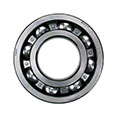

На достаточно популярном форуме и некоторых сайтах публикуют один и тот же список неоригинальных запчастей, который составлен достаточно давно и возможно так же давно обновлялся. Проблема кроется в другом, список неоригинальных запчастей очень полезный, но есть достаточно много неточностей, так как он обобщен, а не основывается на конкретных деталях.
Merchantz | 05.12.2014 | АвтоЗапчасти, Новости, Подделки | 1 комментарий
Вы не поверите, что меня с подвигло рассказать вам свой отзыв о запчастях Elring.
На достаточно популярном форуме и некоторых сайтах публикуют один и тот же список неоригинальных запчастей, который составлен достаточно давно и возможно так же давно обновлялся. Проблема кроется в другом, список неоригинальных запчастей очень полезный, но есть достаточно много неточностей, так как он обобщен, а не основывается на конкретных деталях.
Например ролики и подшипники Ruville всегда хорошего качества, а тяги стабилизатора и наконечники нет, куда определить его в плохие или хорошие бренды?
Главный бонус, в этой статье вы узнаете как отличить подделку Elring по голограмме и внешнему виду прокладки.
прокладки Elring отзывыВот один из конкретных случаев. Elring определили в группу некачественных запчастей, возможно потому, что на рынке автозапчастей присутствует достаточное количество подделок бренда. Вот об этом вы узнаете подробнее, а так же отзывы о прокладках и сальниках Elring.
Если прокладки Elring производят в Германии, не стоит соглашаться на первое предложение, так как заводов в мире уже 20 едениц. От начала основания компании Elring страна производитель остается Германия и главные потребители на конвейер – практически все немецкие автопроизводители.
Основные заводы по производству резинотехнических уплотнений все же в Германии и на них написано “made in Germany”, а то что может быть произведено на заводах Испании, Италии, Мексики, США, Бразилии, Великобритании, Китая, Кореи и Африки – иногда ограничивается словом Germany.
Сделали в Бразилии, отправили в Германию на ОТК (общий технический контроль), подтвердили, упаковали и обозначили на этикетке только Германии “Germany” без “made in”. Это мое предположение по поводу запчастей Elring, но так делают другие производители, точнее бренды-упаковщики.
Разные страны производители, значит и качество разное? Могу вас заверить, что иногда первые заводы работают на старом оборудовании, а новые производственные линии запущенные где-то, где дешевле земля и налоги, работают на более высоком техническом уровне.
Это значит, что меньше шансов на брак, лучше и качественней упаковка, а значит целостность запчасти гарнатирована. Так же стоит отметить, что на новых заводах, которые могут быть в Китае или Африке, производство внедряет новые запатентованные технологии, которых каждый год становиться все больше.
Elring был первым производителем прокладок и уплотнений для двигателей в Германии.

Подшипник -
сборочный узел, являющийся частью опоры или упора и поддерживающий вал, ось или иную подвижную...
4 553Подписчиков
7 423Читателей
234Друзей

25 августа 2016 в 15:34
Сергей Новиков
23
435
Добавить комментарий
3 комментария
Сортировать: Новые
Сергей Новиков
25 августа 2016 в 15:34
Разные страны производители, значит и качество разное? Могу вас заверить, что иногда первые заводы работают на старом оборудовании, а новые производственные линии запущенные где-то, где дешевле земля и налоги, работают на более высоком техническом уровне.
Ответить
Ответить
Сергей Новиков
25 августа 2016 в 15:34
Разные страны производители, значит и качество разное? Могу вас заверить, что иногда первые заводы работают на старом оборудовании, а новые производственные линии запущенные где-то, где дешевле земля и налоги, работают на более высоком техническом уровне.
Ответить
Ответить